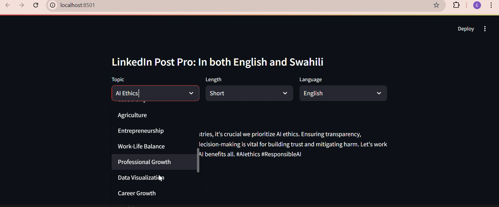
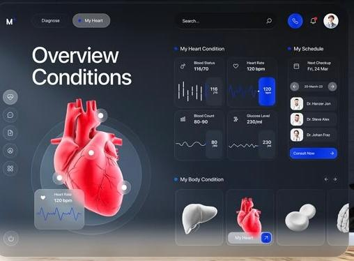

Checkout my Project Samples

Linkedin Post-Pro
Designed and developed a platform to generate professional LinkedIn posts in English and Swahili fostering networking and knowledge-sharing across diverse communities. This tool helps users craft engaging posts on various topics, ensuring linguistic inclusivity and improving LinkedIn engagement.


